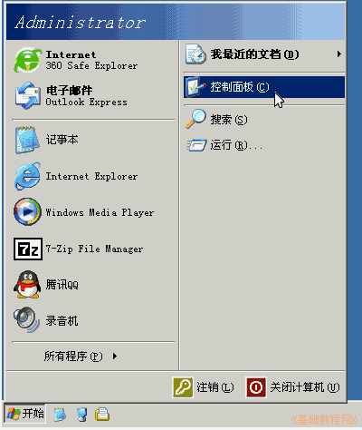
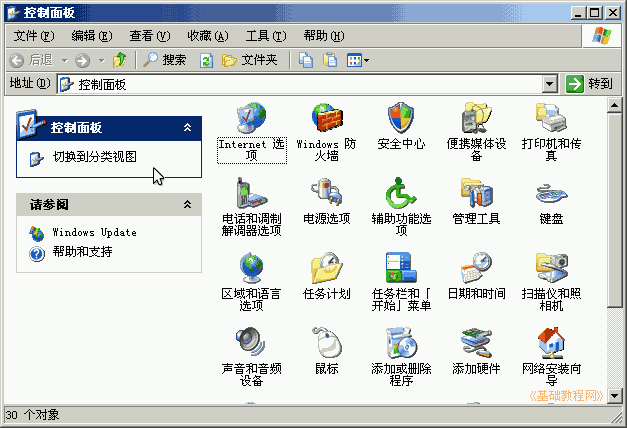
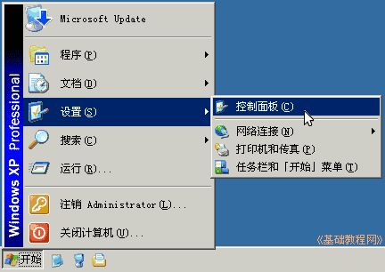

控制面板基础教程
作者：TeliuTe 来源：基础教程网
在 Windows 中，可以通过控制面板来设置系统，下面我们来看一个练习；
1、控制面板
1）点左下角“开始”按钮，在出来的菜单面板里，点右上角的“控制面板”菜单；

2）然后出来一个窗口，里面有许多彩色图标按钮，这是各个项目分类；
3）点窗口左边侧栏里的“切换到经典视图”，可以看到各个设置项目；

4）窗口里面的各个项目，包括界面、程序和硬件的各项设置，在后面的课程里将会介绍；
5）注意：如果是经典开始菜单，那么是点“开始-设置-控制面板”；

本节学习了进入控制面板的基础方法，如果你成功地完成了练习，请继续学习下一课内容；
本教程由86团学校TeliuTe制作|著作权所有
基础教程网：http://teliute.org/
美丽的校园……
转载和引用本站内容，请保留作者和本站链接。